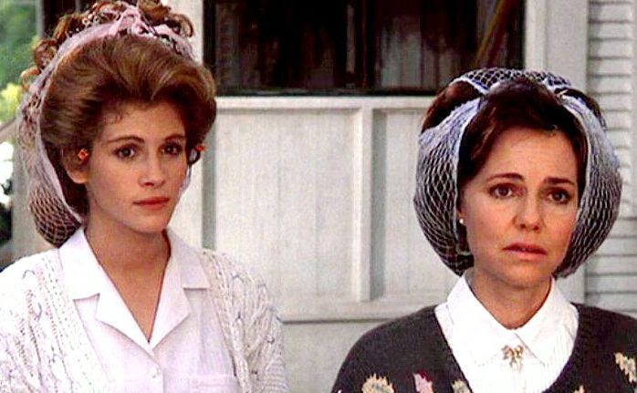

Steel Magnolias Deserves a Spot on the Mt. Rushmore of Feel Good Movies
Plot
Steel Magnolias is a 1989 feel good comedy about a group of women in northwest Louisiana. Starring Dolly Parton (Truvy Jones), Olympia Dukakis (Clairee Belcher), Shirley MacLaine (Ouiser Boudreaux), Darryl Hannah (Annelle Dupuy), Sally Field (M'Lynn Eatenton), and Julia Roberts (Shelby Eatenton). The movie was nominated for several awards and went on to gross more than $83.7 million there.
The movie begins just before Shelby's (Julia Roberts) wedding to Jackson (Dylan McDermott). It takes place mainly in Truvy's Beauty Parlor. It covers events over the next several years, including Shelby's decision to have a son despite being diabetic and the consequences that resulted from the decision.
The movie goes into the friendship of the women who regularly gather at Truvy's Beauty Parlor. The unlikely friendship between Clairee and Ouiser; Annelle's transformations from a shy, anxious young woman, to a partying one, then to a religious fanatic; and Truvy's relationships with her son and husband (or lack there of). Although the main storyline involves Shelby and her mother, M'Lynn, the underlying group friendship is prominent throughout the film.
Characters
Clairee
She is a lady that comes to the beauty shop to get her hair done. She was the wife of the past major, and Ouiser's loving enemy. She plays throughout as a snobby like character, who loves.
Ouiser
As many people's favorite character, she is a mean, grumpy, old, ruthless lady. She has some famous lines such as, "That's it! I found it! I am in HELL!", or, "Don't try to get on my good side, I no longer have one!". She is the one that everyone doesn't like till the end when she softens up a little bit. She is a wonderful character and Shirley MacLaine plays her well.
Truvy
She is the owner of the beauty shop where everyone who's anyone goes. She plays a "good" character who is always wanting the best of the situation. She has lines such as "Laughter through tears is my favorite emotion".
Annelle
She is the new one of the bunch because she has just moved into town. She doesn't know if she has a husband. He took off with her car and she hasn't seen him since. She starts out as a very shy girl, as the story progresses so does she into a partying one, and then to the very religious one who is always praying about something.
M'Lynn
She is the mother of Shelby who loses her daughter in the end. She is opposed to Shelby having a baby and says that she should adopt. She is usually played by someone with blonde hair and younger looking.
Shelby
She is the one is marrying Jackson, she is diabetic and has a stroke towards the middle of the story. She ends up having her baby and dying shortly after.
Facts About 'Steel Magnolias' Even Die-Hard Fans Don't Know
- Steel Magnolias' was based on a true story. Actor and writer Robert Harling wrote the play based on the true story of his sister, Susan Harling Robinson, who died from complications with diabetes.
- It took 10 days to write. "The events that inspired it were so powerful that, after I found the story arena, it just poured out into my typewriter in a 24/7 tsunami of Southernness", Harling told Garden & Gun in 2013 about the speedy writing process. "I had no idea what I'd written. I asked the first person I gave it to if it even looked like a play. I wasn't really sure. All I knew was that I felt it portrayed my sister's life and spirit accurately, and that was enough for me."
- The film sparked a real-life romance. The sparks you saw between Roberts and her on-screen beau Dylan McDermott were real. When filming began on Steel Magnolias, Roberts was dating actor Liam Neeson, her co-star in Satisfaction. Then, according to People, she allegedly broke up with Neeson to date—and eventually become engaged to—McDermott. They never made it to the altar, though, with their relationship ending in 1990.
Four Lessons Steel Magnolias' Teaches Us About Friendship
- Friends accept each other's faults. The women all loved Ouiser even though she admitted that she had "been in a very bad mood 40 years." Her grouchiness was simply a part of her, and her friends accepted it graciously, like Clairee asking, "Ouiser, you sound almost chipper. What happened today—you run over a small child or something?"
- There's no use in trying to keep secrets between friends. Whether it's a pregnancy, an "affair with a Mercedes Benz", or a kidney donation, friends can't keep secrets from each other—and shouldn't bother trying.
- You don't need to have the same interests as your friends.Ouiser and Clairee were great friends, even though Clairee's idea of fun was a weekend checking out the Broadway shows in New York City and Ousier, well, this is what she had to say about that, "I don't see plays, because I can nap at home for free."
- Friendships are the most powerful thing in the world.Friends can carry you through the toughest moments in life and have you come out laughing on the other end, or as Truvy said, "Laughter through tears is my favorite emotion."